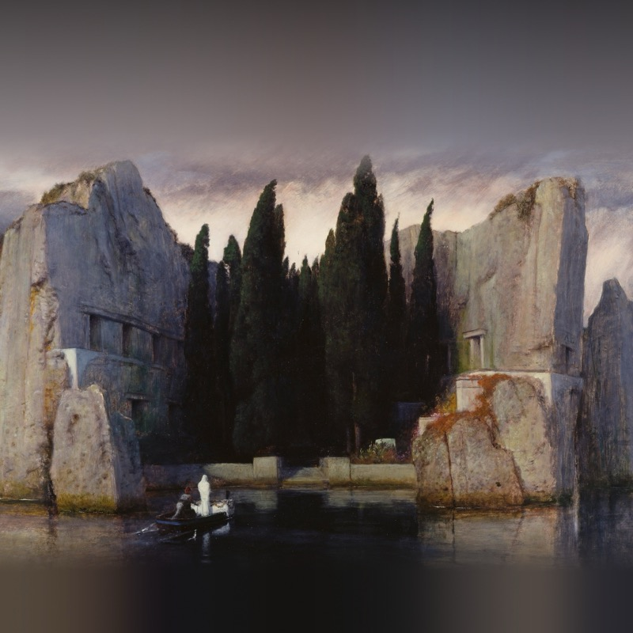

MD Liner Notes

Tone Poems at Dusk
Berliner Philharmoniker
The Poem of Life
Yu-Peng Chen
Recomposed: Vivaldi's Four Seasons
Max Richter
Ambient 1: Music for Airports
Brian Eno
Getting Ready
Eason Chan